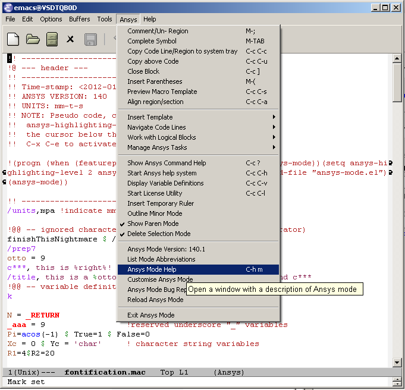
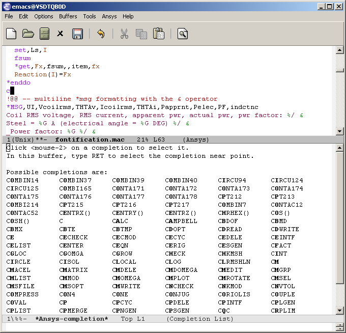
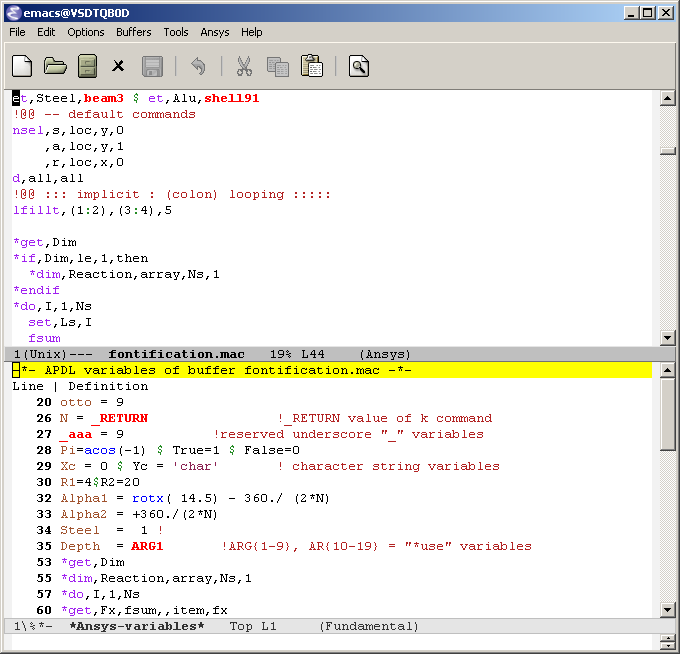
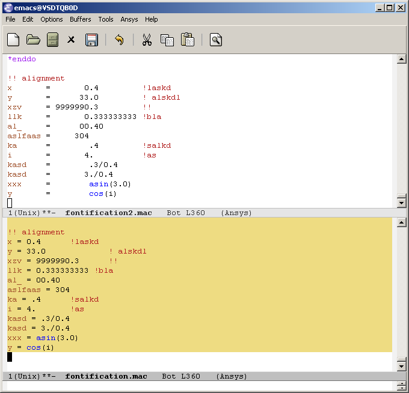
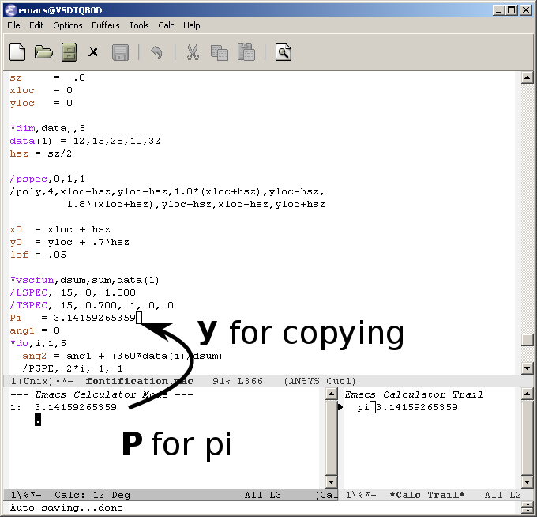
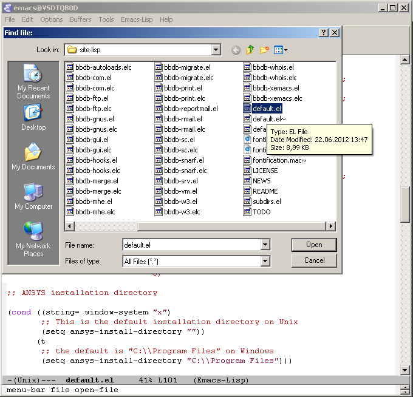

ANSYS-Mode GitHub Pages ANSYS-Mode for GNU Emacs, an introductory Tutorial for version 16.1.1 ANSYS-Mode Highlighting and APDL Reference
Table of Contents
1 Readme first
This is the text of ANSYS-Mode's README.org, it is best read in Emacs's Org mode.
Copyright (C) 2006 - 2015 H. Dieter Wilhelm, GPL V3

1.1 Introduction
This project supports your workflows with the FEA (Finite Element Analysis) suite ANSYS (ANalysis SYStem, registered TM).
It provides `ANSYS-Mode', an add-on to the GNU Emacs editor for investigating and coding APDL (Ansys Parametric Design Language). The mode offers also managing and communication capabilities for various ANSYS processes, like interactive code debugging with the solver or inquiring the license manager status, etc. Some features are quite sophisticated but its documentation is targeted for ANSYS users with little Emacs experience.
Advantages compared to other APDL editors: Largest feature set, user extensible, cost-free, GNU Emacs integrated tools, available for all OS, for the mode's in-built APDL help no ANSYS installation necessary.
GNU (Gnu's Not Unix) Emacs is an up-to-date, powerful and extensible - yet free - editor. High quality software available for every operating system where ANSYS is running.
Ansys-Mode since version 15.0.1 is hosted on Github. The latest sources you'll find on its ANSYS-Mode project site.
The current stable version 16.1.1 of ANSYS-Mode is available at the Github releases site or at Google's ANSYS-Mode drive. There are residing 3 archive packages: 1) A package of ANSYS-Mode together with binaries of Emacs for Windows, 2) a source file package for compiling the latest stable Emacs version together with ANSYS-Mode and 3) the sources of ANSYS-Mode alone, intended for an existing Emacs installation. You might fetch these archives via the command line way, e. g. for the version of ANSYS-Mode bundled with Emacs binaries for Windows:
wget https://github.com/dieter-wilhelm/ansys-mode/releases/download/release-16.1.1/ansys-mode-16.1.1.emacs-24.5-bin-i686-mingw32.zip
Important parts of the code (completions, help strings, etc.) are based on the ANSYS documentation. Besides source files and the Emacs editor you will find tutorials in the download section. For an immediate impression have a look at the [http://duenenhof-wilhelm.de/dieter/ansys-mode_tutorial/A-M_introductory_tutorial.html introductory on-line version], here you are able to see the images in a higher resolution as in the PDF version. And in the [http://duenenhof-wilhelm.de/dieter/ansys-mode_tutorial/A-M_in-depth_tutorial.html in-depth on-line tutorial] there is the source code highlighting better preserved as in its PDF version.
Please report bugs and inconsistencies also in the documentation! Write an email to the maintainer or open a bug report in Github's issues list.
1.2 Requirements
The mode was tested with Emacs-24.5 under Win7 and GNU/Linux64. It should also run with older versions of Emacs down to Emacs-23.
Some of ANSYS-Mode's solver control and communication features are only implemented for GNU/Linux systems.
1.3 Features
- Command syntax help inbuilt in the mode (similar to but more verbose then the ANSYS dynamic prompt), undocumented commands are hinted as such. (There is no need to have ANSYS installed for it to work.)
- Opening the detailed ANSYS help in your web browser for an APDL command or element name (the element number is sufficient) at or before the cursor. Optionally you can input the desired string interactively with a completion of all valid keywords.
- ANSYS process management (viewing error files, license status, starting the ANSYS help browser, etc.).
- Solver communication facilities, i. e. sending code fragments from
the macro file or commands interactively to an ANSYS solver process
(GNU/Linux only). With abreviated input method: For the often used
command C-c C-j (
ansys-send-to-ansys-and-proceed, sending a code line to the solver and skipping to the next) it is sufficient to repeat this command just with the last input key(s) ("j" or "C-j"). - Keyword completion of ANSYS commands, elements, get- and parametric-functions (case-sensitive) of around 2000 ANSYS symbols.
- Comprehensive keyboard shortcuts for code navigation: Skipping comments, navigating number blocks, searching and creating *DO-, *IF-, *DOWHILE-, *CREATE-blocks, etc.
- Warning of deprecated element types with a different highlighting of element names in current and deprecated technology.
- Syntax highlighting in various decoration levels (complete ANSYS keywords, undocumented commands, deprecated elements, …) and optionally also user defined variables (experimental feature).
- Overview of every variable definition (*GET, *DIM, *SET, =, *DO, CM, *VGET, …), as well as component names, in the current file. These are shown in another window. In the highest decoration level (2) these `user variables' are dynamically highlighted as well. With a running ANSYS interpreter process (GNU/Linux only) it is also possible with a keyboard shortcut to query the current status of variables near the cursor.
- Preview and/or insertion of extensible APDL code templates. For example the function template shows all available ANSYS parametric- and get functions. The respective code snippets show examples of APDL work flows and considerable ANSYS know-how, these are easily extensible to boot. The templates are partly interactive i. e. they are asking for or completing user input.
- Alignment (beautification) of whole paragraphs or marked sections with variable definitions.
- Narrowing, i. e. hiding, of uninteresting content. This is done by default for number blocks (nblock, eblocks and cmblocks) in WorkBench created solver input file (with the suffix .dat). You can, in case the need arises, unhide and inspect these as well.
- Outlining (hiding and navigating) of code sections with Emacs' outline-minor-mode. With outline strings '!@' you have a heading structure which you can collapse or show. This is the textual analog to the WorkBench tree view.
- Auto-insertion (optionally) of a header and outline code for every new APDL file.
- Convenient comment handling, commenting out whole paragraphs or whole control blocks and vice versa.
- Auto-indentation of looping blocks and conditional control blocks together with closing of open blocks with auto-insertion of the appropriate end keyword (case-sensitive).
- ANSYS-Mode defines abbreviations for APDL templates i. e. with writing a `nickname' after a special key triggers an exchange of the characters with a complete code template.
- You are able to use all Emacs' facilities, like the built-in calculator, file manager, image viewer and many others. ANSYS-Mode changes some Emacs default behaviour to alleviate the transition from other editors and user interface standards.
1.4 Example applications
Visual examples you will find in the [http://duenenhof-wilhelm.de/dieter/ansys-mode_tutorial/A-M_introductory_tutorial.html online tutorial] and the following screen-shot on [http://www.emacswiki.org/emacs/AnsysMode EmacsWiki]

Above image shows an Emacs frame (in reversed colour mode and compiled with the GTK+ toolkit under GNU/Linux) with a ripped off menu field. The APDL file is in the right window with the (experimental) user variable highlighting switched on and a help overlay (in yellow background) activated. The smaller windows on the left hand side are showing the `Variable definitions buffer' of the same file and a preview buffer of a certain code template, respectively.
1.5 News
Please have a look in the NEWS file for the complete history
1.6 Installation
The version scheme is a mixture of the ANSYS release (currently "16.1") on which the highlighting and completing code is based and the version increments (currently ".1") of ANSYS-Mode (thus "16.1.1") for this particular ANSYS release.
1.6.1 Files
Sources:
- ansys-mode.el: Main file
- ansys-keyword.el: Fontification variables build from helper/ansys-fontification.el
- ansys-template.el: Template definitions
- ansys-process.el: Variables and functions related to solver processes
(and possibly their compiled versions with the suffix '.elc'. In case you are using the mode with an older version of Emacs than 24.1 please remove the .elc files.)
Auxiliaries:
- README.org – This file
- NEWS.org – News and history
- TODO.org – Todos and deficiencies
- LICENSE – The GPL (Gnu Public License) Version 3
- default.el – Configuration (example) file
- helper/example.dat – WorkBench example APDL solver input file
- helper/example.anf – ANSYS geometry neutral file example
- helper/example.mac – APDL user macro and highlighting example
- doc/A-M_introductory_tutorial-16.1.1.pdf – Your first look at ANSYS-Mode?
- doc/A-M_in-depth_tutorial-16.1.1.pdf – A hands-on ANSYS-Mode tutorial
- doc/A-M_in-depth_tutorial-16.1.1.ansys – Hands-on tutorial's supplementary APDL code
- doc/A-M_APDL_reference-16.1.1.pdf – APDL and ANSYS-Mode syntax highlighting reference guide
1.6.2 Short instructions
For Windows systems:
If applicable please grab the package of a pre-compiled Emacs-24.5 (Win32/64) bundled with a preconfigured ANSYS-Mode at above Github site and unpack this archive anywhere on your system (you do not need administrator rights). You might subsequently run the program addpm.exe (located in the bin directory) to add an Emacs entry to the Windows start menu (please refer to the README.W32 file) otherwise start the Emacs executable runemacs.exe from there.
ANSYS-Mode is now immediately available, by opening (check out the `example.mac' example) or by creating a new APDL file with a .mac suffix. Have fun!
Most functionalities should work out of the box, but if you have NOT installed ANSYS in its default installation directory on drive `C:Program Files' on Win64 and you want to start–for example–'anslic_admin' or the ANSYS help browser directly from Emacs please adjust the configuration file `default.el' file in Emacs' `site-lisp' directory according to the commented code examples. If you are using your own configuration file, please remember that it is loaded before `default.el'; this means that ANSYS-Mode settings done by Emacs' customisation system or written in your configuration file might be overwritten by `default.el'. If you remove `default.el' or set 'inhibit-default-ini' to non-nil in your own init file, then default.el is not loaded any longer.
In case you want to download or have already installed the original version of GNU Emacs, you can also download and configure the ANSYS-Mode package separately. Please refer to below instructions.
For existing Emacs installations on Windows and GNU/Linux:
1.6.2.1 Direct way; no file configuration necessary
Important prerequisite: Emacs must know where all the code (.el or its compiled versions .elc) files reside! Extract the mode archive into an Emacs directory which is in its default load-path (a good place is the `site-lisp' folder in your Emacs installation tree) or indicate the directory with the environment variable EMACSLOADPATH).
From there on you must load first the mode definitions with `M-x load-file ansys-mode RET', i. e. typing "M-x" (first) the <Alt> key and then the <x> key simultaneously, you'll end up in the so called Emacs minibuffer prompt, now type "load-file" (you might apply the <TAB> key for the Emacs auto-completion feature at every intermediate stage) and conclude this input with the <RET> key. Emacs will then prompt you for a file, type in the directory where you have extracted the code and "ansys-mode.el" (or "ansys-mode.elc" - for loading speed reasons - if the compiled version is available) and press RET to execute the loading. Thereafter call the mode itself with `M-x ansys-mode RET' for every new or existing APDL file.
1.6.2.2 More convenient way; file configuration necessary
Extract the files somewhere on disc and put the following paragraph into your `~/.emacs' or `~/.emacs.d/inti.el' configuration file in your home directory `~', which is determined by the environment variable HOME (on both Windows and Unix), adjust the stuff below in capital letters, restart Emacs and ansys-mode will be automatically applied for all files with suffixes `.mac', `.dat' and `.inp'.
(add-to-list 'load-path "C:\\DIRECTORY-PATH\\WHERE\\THE\\ANSYS-MODE\\FILES\\RESIDE") ;; assuming you extracted the files on drive "c:" ;; for example: "c:\\emacs-24.5\\share\\emacs\\24.5\\site-lisp\\ansys-mode" ;; .mac is the macro suffix of ANSYS i. e. these macros can be called ;; in the ANSYS command prompt like a regular ANSYS function (without ;; the suffix .mac) (add-to-list 'auto-mode-alist '("\\.mac\\'" . ansys-mode)) ;; .dat and .inp are WorkBench's solver input file suffixes (add-to-list 'auto-mode-alist '("\\.dat\\'" . ansys-mode)) (add-to-list 'auto-mode-alist '("\\.inp\\'" . ansys-mode)) ;; .anf is the suffix for "ANSYS Neutral" files which include mostly ;; gometric data but also some APDL snippets. (add-to-list 'auto-mode-alist '("\\.anf$" . ansys-mode)) (autoload 'ansys-mode "ansys-mode" nil t)
1.6.3 Verbose instructions
- Direct way, no configuration necessary (loading `by hand')
Please consult the `direct way' description above.
If you are unfamiliar by these concepts I suggest working through the build-in tutorial of GNU Emacs (you'll find it in the help entry in the menu bar), it doesn't take too much time and the investment will be worth it since it will accelerate your general editing capabilities in the future.
- Permanent configuration
Please have a look at the accompanying `default.el' customisation
example. It can be used as a configuration file (after moving it
e. g. to /usr/share/emacs/site-lisp or
c:\\EMACS_INSTALLDIR\\site-lisp, hint: The directory site-lisp/ in
the Emacs installation tree is in its default load-path). Yet
`default.el' is loaded AFTER your personal Emacs configuration file
(if there is any) `~/.emacs' (or `~/.emacs.d/init.el')! If you intend
to change the following settings with Emacs' customisation system or
changing them directly in your personal configuration file, you must
either set the variable `inhibit-default-ini' to `t' (setq
inhibit-default-ini t) in your personal configuration file or remove
`default.el' otherwise your settings might be overwritten!
If the ANSYS-Mode files (*.el) are NOT placed in a default Emacs load-path it is necessary to adjust the following variable.
(add-to-list 'load-path
"C:\\YOUR\\DIRECTORY\\WHERE\\MODE\\FILES\\RECIDE")
For example: "c:\\emacs\\ansys-mode" on a Windows system or "/usr/local/src/emacs/ansys-mode" on a GNU/Linux system.
(autoload 'ansys-mode "ansys-mode" "Activate ANSYS-Mode." 'interactive)
From here you are able to type "M-x ansys-mode RET" to activate the mode for every interesting file.
- Automatic mode assignment
When you intend to apply the mode automatically, for all files with the extensions `.mac', `.dat', `.inp' and `.anf' ( .dat and .inp are WorkBench's solver input file suffixes) you are opening, add the following to your `.emacs' file:
(add-to-list 'auto-mode-alist '("\\.mac$" . ansys-mode)) (add-to-list 'auto-mode-alist '("\\.dat$" . ansys-mode)) (add-to-list 'auto-mode-alist '("\\.inp$" . ansys-mode)) ;; this is the suffix for "ANSYS Neutral Files" which include some APDL. (add-to-list 'auto-mode-alist '("\\.anf$" . ansys-mode))
The suffix below belongs to the `anys neutral file' export format which contains also an APDL header and footer.
(add-to-list 'auto-mode-alist '("\\.anf$" . ansys-mode))
- Auto-insertion of code
In case you also want to enjoy the auto insertion feature, which puts (optionally) some predefined body of ANSYS commands to every new APDL file insert the following into '.emacs':
(setq auto-insert-mode 1) (setq auto-insert-query t) ;insert only after request (add-to-list 'auto-insert-alist '(ansys-mode . [ansys-skeleton-compilation]))
- Auto-loading of helper functions
With below section you are also able to use certain ANSYS related commands in a new Emacs session without the need of previously having explicitly called ansys-mode.
(autoload 'ansys-customise-ansys "ansys-mode" "Activate the function for calling a special ANSYS customisation buffer." 'interactive) (autoload 'ansys-abort-file "ansys-mode" "Activate the function for aborting ANSYS runs." 'interactive) (autoload 'ansys-display-error-file "ansys-mode" "Activate the function for inspecting the ANSYS error file." 'interactive) (autoload 'ansys-start-ansys-help "ansys-mode" "Activate the function for starting the ANSYS help browser." 'interactive) (autoload 'ansys-start-ansys "ansys-mode" "Activate the function for starting the APDL interpreter under GNU/Linux or product launcher under Windows." 'interactive) (autoload 'ansys-license-status "ansys-mode" "Activate the function for displaying ANSYS license status or starting a license utility." 'interactive)
1.7 Usage and customisation
When you have a file under `ansys-mode' check out the menu bar's `ANSYS' entry for its possibilities and select the entry `Describe ANSYS Mode' or type "C-h m" (i. e. the <CTRL> key together with the <h> key and subsequently the <m> key), which will display the ANSYS-Mode help which is your `online' guide for its usage, key-bindings and customisation options.
Templates, i.e. code snippets or so called skeletons might be extended in `ansys-template.el' and can be used similarly or complementarily to a classical ANSYS macro library.
1.8 Experienced Emacs users
ANSYS-Mode changes the default behaviour of Emacs
globally:
- Switches on font-lock-mode if toggled off, e.g when calling Emacs with the -D (basic display) option
- Activated Delete Selection Mode
(delete-selection-mode t) - Activated Show Paren Mode
(show-paren-mode t) - Advised M-w (kill-ring-save) without active region to copy the whole line
(Delete Selection Mode can be switched off in the ANSYS-Mode menu.)
locally:
- (setq scroll-preserve-screen-position t)
- Changed M-h (mark-paragraph) to move the cursor to the end of the region
1.9 Acknowledgements
- Tim Read
- Geoff Foster
For their ansys-mod.el from 1997 which triggered the idea in 2006 to start ANSYS-Mode as a GNU public license (GPL) implementation with an extended feature set.
Further acknowledgements in mainly reverse chronological order:
- Mehmet Akgul
- Nish Joseph
- Alwin Perras
- Mathias Dahl, for hide-region.el (and yupeng for some additions)
- Thien-Thi Nguyen
- Michael Kidner
- Ilya Gurin
- Alex Schroeder
- Holger Sparr
- Eli Zaretzki
- Markus Triska
- RMS (Richard Stallman) for GNU Emacs
1.10 Further Resources
1.10.1 Editor Resources
- The Emacs Wiki
- A competitor of ANSYS-Mode: The commercial Pedal script editor
- Another free APDL editor, unfortunately this site seems to be abandoned since 2010
- Simple APDL syntax highlighting is available for various editors, gvim, nedit, … just to name a few, please have a look at ANSYS.net.
1.10.2 ANSYS and APDL resources
- Xansys, an ANSYS online community (registration necessary for the forum)
- A general ANSYS repository ansys.net
- The ANSYS homepage
- AUC, the ANSYS User Club in Germany
1.11 Bugs and Problems
For an overview of deficiencies and outstanding issues please check the beginning of the TODO file.
The `user variable' highlighting is still experimental, newly edited variable definitions are taken into account only when the variable ansys-dynamic-highlighting-flag is set (for very large files this slows Emacs and this flag is only implemented for `.mac' files) or any times when you activate the variable display (with C-c C-v) and the maximum highlighting level. If not already the case try to use the code in compiled form, please have a look at the documentation of the Emacs function `byte-recompile-directory'.
ANSYS `format line' (multi-line highlighting) and `user variable' highlighting (when the mentioned flag above is not set) are somewhat brittle, please use "M-o M-o" to update the fontification in case the format line and all variables are not highlighted correctly.
1.11.1 Getting help
If you experience problems installing or running this mode you have the following options:
- Write an email to the mode maintainer (you can trigger a bug report from the menu or directly calling the function `ansys-submit-bug-report'. Even when you are not in the position of sending emails from Emacs this will give at least a useful mail template with valuable information about internal mode settings).
- When you have already a (cost free) Github account you are able to issue a bug report at the Github issues list. From this site you might download the latest development version.
- Also at the Emacs Wiki you might add comments or wishes without registration.
2 NEWS
2.1 News and History
Copyright (C) 2006 - 2015 H. Dieter Wilhelm, GPL V3
2.1.1 Version 16.1.1 Mai 2015
- The command `ansys-send-to-ansy-and-proceed' (C-c C-j) is now interactive, i. e. after invoking this command with its key-sequence "C-c C-j" it can be repeated by typing just the final character "j" (or "C-j").
- The command `ansys-send-to-ansys' (C-c C-c) grabs now the current paragraph, when there is no region marked. And the cursor doesn't skip to the next code line without a prefix argument "C-u".
- The `ansys-show-command-parameters' (M-?) tooltip can now be switched immediately off with a prefix argument of zero.
- The output buffer ANSYS of the interpreter commands might now reside on a another Emacs frame.
- Extended the APDL material library which includes now creep and multi-linear plasticity data in matlib/ as well.
- Is packaged with the current stable version Emacs-24.5 and updated for ANSYS 16. Besides the Windows version there is also now a source package available for compiling Emacs-24.5 together with ANSYS-Mode.
- Renamed README, NEWS and TODO to *.org, fontification.mac to example.mac. Included an example.dat and example.anf
2.1.2 Version 15.0.1 Aug 2014
- Added an example of an ANSYS material library
- C-c C-c (ansys-send-to-ansys) doesn't skip to the next code line any longer but remains in the code line. The former behaviour borrows the new function C-c C-j (ansys-send-to-ansys-and-proceed), executing and then skipping to the next code.
- Improved the `ansys-show-blabla…
- Highlighted now the parametric function CXABS(), which was already introduced in V14.
- Updated the help, completion and highlighting functionality to V15 And as usual: Corrected some bugs, typos and extended the templates, e. g. partial solutions with psolve for mass calculations.
2.1.3 Version 14.5.2 Mar 2013
The unwieldy and usually uninteresting pure number blocks (the nblock, eblocks and cmblocks) in files with the suffix .dat are now hidden by default. WorkBench creates these blocks in input files for the solver. You can, off course, unhide these blocks and inspect them as well.
Functions: `ansys-hide-number-blocks', `ansys-show-number-blocks', `ansys-hide-region'
Customisable variables: `ansys-hide-region-before-string', `ansys-hide-region-after-string' and `ansys-hide-region-propertize-markers'
- Added a way for showing the current value and status of a user variable at point, overcoming the drawback of C-c C-v `ansys-display-variables' that it is showing only the variable definitions and definitions coming from external files are not shown. You can activate this functionality (Linux only) with a prefix argument: C-u C-c C-v.
- Fixed the completion and highlighting of command keywords and their help entries, in the previous release were unfortunately many keywords missing or entries incomplete.
- As always: Enhancements and corrections for the APDL templates, added a beam simulation template
2.1.4 Version 14.5.1 Sep 2012
Added a function (C-c C-b or "M-x ansys-browse-ansys-help") showing the detailed ANSYS help in your web-browser for an APDL command or element name (also the element number is sufficient) around the cursor (or if that fails at the line beginning).
Are you also tired of the ANSYS help browser? For example try searching for the `F' APDL command, it is impossible! (update 2014: This has improved with the new help viewer in V15.) You have to pick it up from the alphabetical command list. Likewise when you are searching for an incomplete keyword, no hint, no completion, nothing! Finding and browsing relevant APDL documentation is still cumbersome and too slow.
As a highlight of this release you can now read immeadiately the detailed ANSYS help in your web browser for all APDL command AND element names around the cursor (or for the first command in the current line if that fails to be valid keyword). You may input your search string also interactively, including its completion to ANSYS help keywords and of certain help categories, like `Release Notes' and such. This is an ideal complement to ANSYS-Mode's in-built `command syntax help'.
- The function `ansys-start-ansys' is now available under Windows as well and starts the APDL product launcher under this platform.
- When calling `ansys-browse-ansys-help' and `ansys-show-command-parameters' (M-? - the in-built `command syntax help') with a prefix argument for interactively entering a command name, the name is now completable. And in the non-interactive mode both functions working also for APDL commands which are commented out as well (only for the first command in case of `ansys-show-command-parameters').
- Also the input of `ansys-query-ansys-command' (C-c C-q) is now completable to all current ANSYS commands and with an optional prefix argument the current code line is copied as the initial input.
- Improved the introductory and the in-depth tutorial and extended the documentation with an APDL and syntax highlighting reference in HTML and PDF. (To some degree syntax highlighted in the PDF version as well)
- Values of the `_RETURN' variable are now documented in the function `ansys-skeleton-information'
- `ansys-next-code-line' and `ansys-previous-code-line' (M-n, M-p) are now skipping over node and elements blocks, which are only pure number blocks. They are now alternatives to `ansys-number-block-start' C-c { and C-c } respectively
- Removed bug in customisation system and dropped 32 bit ANSYS support in line with the ANSYS OS [http://www.ansys.com/Support/Platform+Support strategy] for 2013.
- Described a poor man's round() workaround in ansys-template-function under the nint() entry
2.1.5 Version 14.0.1 June 2012
- Enhanced the documentation, included is now an introductory tutorial `ansys-mode_tutorial.pdf' and a hands-on tutorial `APDL_tutorial.pdf'
- Added a timer for getting rid of the parameter help overlays after some time interval (1 min) without reusing the parameter help
- Added a (customisable) variable `ansys-no-of-processors' and function with the same name for specifying the number of processors for an Ansys multiprocessor run
- Activated outline-minor-mode and auto-insertion (in default_el)
- Extended mode commands, templates and removed typos mainly in ansys-template.el. For example added all *get functions in the ansys-skeleton-function template
- Added a custom variable the corresponding function ansys-ansysli-servers for specifying the ansys interconnect license servers
- Added a new shortcut and menu entry isometric view
- Applied sensible defaults to ansys-lmutil-program, ansys-program and ansys-help-program, for most needs it should now be enough just to set the used ansys version (ansys-current-ansys-version, if it is not 140, see the example config file default_el) and maybe additionally the installation directory (ansys-install-directory).
2.1.6 Version 13.0.1 March 2011
- Added support for aligning whole sections of Ansys variable definitions, both in the Ansys menu and as a keyboard shortcut 'C-c C-a'
- Enhanced ansys-display-skeleton with an optional argument for inserting the respective skeleton in the APDL buffer.
- Enhanced some "interactive" code templates with lists for completing the input and sensible defaults
- Refined some abbreviation definitions and focused the display of abbreviations to the mode specific ones
- Fixed insert pair functions, like 'C-c %'
- Changed keyboard shortcut for calling the Ansys help to 'C-c C-h'
- Updated keyword list, deprecated elements, undocumented commands, etc. to release 13.0 of Ansys, as usual.
2.1.7 Version 12.0.1 Dec 2010
- Some new graphics commands like ansys-zoom-in, -zoom-out, -move-left, -right, -up, -down, etc.
- The lisp code had to be split up for better maintance, the code files for are now provided in an archive together with their compiled state for speed reasons.
- Reworked the fontification mainly for the sake of speed. There are now highlighting levels to choose from, offering e. g. higlighting of deprecated element types in a warning-face, deprecated Ansys * comments and so on
- Updated and improved the readability of the mode's help and the README file
- The output from the LMUtil license status tool (C-c C-l) is now filtered on UNIX to be more concise.
- The `ansys-send-to-ansys' (C-c C-c) and the ansys-copy-or-send-above (C-c C-u) commands are now generalised so that they are also doing some useful stuff without a running Ansys interpreter process (they copy in that case the cursor line/the chosen region and copy from the file beginning to the cursor line, respectively, to the clipboard). Given a prefix argument to these commands, the cursor won't move to the next code line.
- The completion of Ansy keywords is reworked and has improved. Ansys symbols are now completed in 3 ways: Upcase, downcase and capitalise.
- New: Added tooltips to all Ansys menu entries. Activated or deactivated menue entries according to the context
- Ansys mode tries to gather information from the OS environment when the variable `ansys-license-file' is not set by the user and uses now Ansys standard names as default values for some more variables.
- The variables in the variable summary are now sorted according to their first occurance and not any longer in "definition types". Now component names are included with the variable highlighting.
- Added menu entry for reloading Ansys Mode for the case when certain customisation options in the code files itself are changed and require a code reloading to take effect.
- Ansys mode changes some Emacs default behaviour to smooth the transition from other editors
2.1.8 Version 11.0.2 Nov 2009
- Enabled the preview of code templates or fragments (called skeletons in this mode, please inspect `ansys-display-skeleton').
- Removed "buffer has no process" bug when killing an ansys-mode buffer.
- Submitting interactively Ansys commands (via minibuffer query, not only as written in a macro file) to the solver process, ansys-query-ansys-command (C-c C-q).
2.1.9 ansys-mode.el 11.0.1 in comparison to ansys-mod.el:
- New: Provides Ansys command parameter- and syntax help.
- New: Offers Ansys process management: Acquiring license server information in a buffer Starting and stopping asynchronously Ansys runs. Sending code lines to running Ansys process (sort of code debugging facility) and getting the output into a buffer.
- New: Experimental highlighting of user defined variables. Redefinition and clearing of variables is not yet taken into account.
- New: Emacs customisation facility is available for the new Ansys mode group.
- New: Emacs outline-minor-mode is readily available in conjunction with this mode.
- Completions of Ansys commands are now case-sensitive, with additional completion of function and element names.
- Previously defined skeletons are fully functional now, new ones are added and enabled with the abbreviation and auto-load facilities of Emacs 22.
- Ansys' interpreter's disregard of any capitalisation is now fully taken into account in the highlighting.
- The apostrophe "'" is now assigned as the Ansys string and the value of character parameters delimiter and not wrongly """; the strings are fontified accordingly.
- The dollar sign "$" is now emphasised as the Ansys condensed input character (multiple Ansys commands in one line).
- The colon ":" is now emphasised as the Ansys colon do loop character ("(x:y:z)" means from x to y, in z steps, z is equal to one as default). For example: "n,(1:6),(2:18:2)" runs 6 loops. Colon loops are working also with real values: k,,(2.5:3:0.1) and with array parameters: k,,A(1:100), but the latter is an undocumented feature. Since ansys 11.0 the colon looping is also working with *GET functions (example: A(1:5)=NX(1:5))). A ":" indicates also a beginning of a label for the *GO and *IF command.
- "%" is now distinguished as the Ansys parameter substitution and format specifier character.
- The ampersand "&" is now correctly highlighted as the only available Ansys continuation character applicable to the format commands (*MSG, *MWRITE, *VREAD and *VWRITE) command and the subsequent format strings of the command are fontified.
- New: " *" (SPC before *) is indicated as an (Ansys deprecated) comment sign e. g.: %% a = 3 **4 %% results in "a" having the value 3, whereas %% a = 3**4 %% sets "a" to 81!
- New: A line beginning with a comma is indented to the length of the last non slash or asterisk command as a reminder that the Ansys solver interprets this as a space holder for the last command keyword (the Ansys default command concept).
- Extended documentation, code cleaning and simplification of commands (e.g. comment handling) with the application of standard Emacs 22 facilities among other things.
3 Tutorials
3.1 Introduction
3.1.1 Introducing ANSYS-Mode – an APDL environment
This project supports your APDL
workflows with the FEA
suite ANSYS.
It provides an editor mode to GNU Emacs for investigating and coding APDL. The mode offers also managing and communication capabilities for various ANSYS processes, like interactive code debugging with the solver or inquiring the license manager status, etc. Some features are quite sophisticated but its documentation is accessible for ANSYS users with little APDL and Emacs
experience.
Emacs is an up-to-date, powerful and extensible - yet free - editor. High quality software available for every operating system where ANSYS is running.
In the following C-c or e. g. M-c means typing the <CTRL> or <ALT> key together with the <c> key.
3.2 Download
3.2.1 Download ANSYS-Mode together with the Emacs editor
3.2.1.1 Remarkably there are no costs and license restrictions also for commercial use
Most convenient is taking the pre-configured ANSYS-Mode in conjunction with the latest Emacs distribution for Win32/64 from the ANSYS-Mode releases page on GitHub.

3.3 Installation
3.3.1 Install ANSYS-Mode together with Emacs
Extract the former zip archive to an arbitrary location on your file system. Optionally you might install Emacs shortcut icons for the system tray with addpm.exe in Emacs' bin folder.

In this list runemacs.exe is the actual editor executable.
3.4 Usage
3.4.1 Open an APDL macro file with Emacs
Start the editor and open example.mac in Emacs' site-lisp folder or any other APDL file (with the extensions mac, inp, dat or anf, otherwise additionally type M-x ansys-mode and <RET>).

3.4.2 Explore the ANSYS-Mode menu
If ANSYS is installed in its default folder C:Program Files under Win64 also system dependent functions are working, like browsing the APDL help with C-c C-b, otherwise, you can easily configure this. All described features can be executed through the ANSYS-Mode menu or with keyboard shortcuts.

3.5 Selected ANSYS-Mode Features
3.5.1 Inspect easily WorkBench solver input files (example.dat)
ANSYS-Mode hides the normally uninteresting but usually very large number blocks. On the right hand side is the unhidden content.


3.5.2 Use the ANSYS-Mode APDL command help
Please type M-?, alternatively: C-c ?, on a code line and you will see the APDL command's description and syntax (even when the line is commented out). You can continue editing, this temporary overlay - here in yellow - remains visible for a while.

3.5.3 Select and insert templates from the menu into your code
Screenshot with the ANSYS Classics GUI on the left and Emacs on the right on Win64

3.5.4 Preview the extensible APDL code templates
Before inserting an entire template you are able to inspect its content in a preview window (C-c C-s) and might just copy the most relevant snippets, please see below and next slide.

3.5.5 Select an interesting template from a completion window
Type C-c C-s to choose a template name, use the <TAB> key to complete or to open the completion window of available items.

3.5.6 Check auto-insertion and outline your code (tree view)
Create a new APDL file with the suffix
and let Emacs auto-insert a skeleton with `outline' headings. Collapse the content to a tree view with C-c @ C-t and open all (C-c @ C-a) again.

3.5.7 Utilise completions of all – around 2000 – APDL symbols
Move the cursor behind a character - here `c' - or word fragment and type <ESC> <TAB> or C-M-i for completing up to date APDL command-, element- and function names.

3.5.8 Open a summary window of your APDL variables
Type C-c C-v to receive a summary window of all your variable definitions. With an argument (C-u C-c C-v) you will get the current value of your variable at the cursor (Linux only, right).


3.5.9 Structure your variable assignments
Move the cursor to a variable definition paragraph or mark, here in yellow, some definitions and type C-c C-a to align them.

3.5.10 Use the Emacs integrated, programmable RPN calculator
Type C-x * * to open the calculator, type y for pasting results directly into the APDL file. q to quit the 'Emacs Calc' windows.

3.5.11 Debug your code interactively with the solver (GNU/Linux)
You can run the ANSYS solver under Emacs and send code lines from above APDL window with C-c C-j (C-c C-c for whole regions) directly to this process. Below you see the interactive solver output and on the left hand side the corresponding ANSYS images.

3.5.12 Display the license status and preview images on GNU/Linux
In Emacs' mid-section you see the license state (C-c C-l) and left Emacs window (below) a thumbnail view of images from a folder.

3.5.13 Arrange the ANSYS-Mode windows to your needs
The image shows an Emacs 23.2 frame (in reversed colour mode and compiled with the GTK+ toolkit under GNU/Linux) with a ripped off ANSYS-Mode menu field

3.6 Configuration
3.6.1 Configure system dependent aspects and user options
The mode comes pre-configured for the default installation of ANSYS for Win64. If something is amiss: Adjust
3.6.1.1 the well commented configuration file default.el

… and restart Emacs.
3.6.1.2 or change the settings with Emacs' customisation system

… and reload ANSYS-Mode.
3.7 Documentation and Licensing
3.7.1 Get to know Emacs and its excellent documentation
Newcomers to Emacs should take the guided online tour to get a background of its capabilities and fire up the interactive tutorial (C-h t) which is translated to various languages.


3.7.2 Use the ANSYS-Mode built-in help
Please type C-h m to open the mode help, especially for ANSYS-Mode's usage and keybindings. At the beginning is also a brief introduction of basic Emacs concepts.

3.7.3 You might read further ANSYS-Mode documentation
- Licensing and costs:
- This is free and open software, there are no costs and effectively no restrictions for you using Emacs and ANSYS-Mode also commerically. Both are under the GPL, the Gnu Puplic License described in the LICENSE file.
- Installation:
- More detailed instructions are necessary if you are not using the mode bundled with Emacs for Windows. Please have a look in the README.org file. An online version is on ANSYS-Modes's GitHub Page.
- Hands-on tutorial and reference:
- You will find these in-depth documentation included in the mode's archives on GitHub's releases page or read online.
- News and project history:
- They are placed in the mode's accompanying NEWS.org file
3.8 Help and Bugs
3.8.1 Search for help, report bugs and issues
Besides the documentation, have a look in the GitHub's issues site or send an email to the maintainer. Please use the ANSYS-Mode bug report functionality, which might provide helpful status information.

3.9 Summary
3.9.1 Use ANSYS-Mode appropriate to your needs
3.9.1.0.1 The relevance of APDL remains tall: `WorkBench' operates exclusively the ANSYS solver with it! For a true understanding the study of APDL is still prerequisite. Furthermore, code APDL only for repetitive tasks and WB command snippets.
3.9.1.1 Basic APDL Viewer
Navigating in WB solver input files, discerning relevant information through highlighting, quickly analysing APDL commands with the built-in help or studying their detailed help in your browser.
3.9.1.2 Earnest APDL Editor
Specific shortcut keybindings, outlining, code templates, completions, auto-indentation, abbreviations, auto-insertion.
3.9.1.3 Advanced APDL Environment
Solver communication/feedback - hybrid between coding and debugging (GNU/Linux only), retrieving license states, error file viewing, abort file handling, extending APDL templates, …
3.9.2 Last slide of the ANSYS-Mode tutorial
3.9.2.1 Hint for the curious:

3.9.2.2 Thank you for your time getting acquainted with ANSYS-Mode!

4 Todo
4.1 Deficiencies:
- Highlighting
- Experimental user variable highlighting
does not take into account:
- clearing of variables and
- usage of variables before their definitions (uninitialised variables)
- the variable fontification might clash with ANSYS specifiers
- string substitution of %variables% in strings does not highlight them in the proper variable face
- Highlighting
- A label :LABEL may appear behind the /input command and is not highlighted as label
- Highlighting
- An apostrophy clashes with the ANSYS "char" specifier Keybinding: M-Tab is captured under Windows and some GNU/Linux desktops Workaround: Press instead of M-Tab (ALT + TAB) the ESC key and then the Tab key (ESC, TAB) or apply the command from the menu bar
- Highlighting
- help overlay is only removed after 1 min if the buffer is active at that time!
- Keybinding
- M-j: When there is already a `&' in a format command (like *msg, *vwrite, *mwrite) ansys-indent-format-line inserts a redundant one
- Completion
- Of parametric function parentheses completes redundant closing parentheses
- Completion
- A mouse selection from the ANSYS-completion buffer is only inserted upcased.
- Completion
- ANSYS command 'C***' will not be completed
- Completion
- Emacs shows M-TAB (which is not working on most Desktops) in the menu but not ESC TAB or M-C-i for -complete-symbol (sent a bug report 2012-06-21 bug#11758 bug-gnu-emacs@gnu.org, acknowledged and fixed 2012-09-02 => Emacs 24.3?)
- Skeleton
- Mouse selection of -structural-template does not work (because of stipulated user text input from this skeleton)
- Navigation
- C-c { does not skip an overlay in a number-block
4.2 16.1.2:
4.2.1 Wish-list
- add bbdb files to emacs packages?
- -show-command-parameters indicating at which parameter position
the cursor is active (update tutorials)
- no line wrapping for overlays!
- numbering of commas
- add timer customisation variable 1 min, 2 min, etc.
- Display hints for the shortened key(s) for C-c C-j
- Indicate visually the region which was copied or send for func. -send-to-ansys
- example.mac: make it solver compatible
- GH-pages with tutorials
- implement -hide-region also for rotated nodes in WB .dat files (frictionless support)
- check *vwrite with gui mode and interactive mode (graphics window?)
- add element numbers to the general completion list, yes or no?
- WikEmacs, Melpa, GNU ELPA and/or marmalade, ANSYS-Mode debian .deb package
- HTML APDL documentation
here is the tanslation of names to html files:
- link to ANSYS-Mode APDL reference:
- Chapters of structural APDL documentation:
- -dynamic-highlighting is sluggish, highlighting somehow retarded!!! Still??
- TODOS: in fontification.org
- deletion of vectors *del,Vector without request? ,,nopr?
- check character variables 32 Chars. and highlight accordingly string 128, char 8
- *vscfun: mean, stdev, …
- test server specifications (menu!) make interconnect conditional of the ANSYS version >= 120
- explain fill/*vfill under the "looping" commands: Generates a line of nodes between two existing nodes.
- switch automatically to read only mode for *.dat files?
- force harmonic table (*vfill) example in -skeleton-bc, make a ansys…-template out of two-mass-harmonics.mac
- -program, -license-file and -ansysli-servers should show the current selections
- check -license-file var with -license-file-check
- Emacs var :DONE:
- env vars :DONE:
- activate -license-file function :TODO:
- document Lagrange contact behaviour for contact/press-fit skeleton, critical to element differences!
- _RETURN somewhat milder red, clashes with reseved vars!
- constraint equations in -template.el and get functions
- document A-M_in-depth_tutorial.org
- fontification.el
- add the 4 ANSYS neutral file (aux15) functions to the parameter-help, .anf files from DM anf export kpt – Write keypoints or vertices into the database lcurv – Write lines or edges into the database asurf – Write the area or face information into the database vbody – Define a B-rep solid.
- add Hlp_G_OPE6_NeutralFile.html (aux15 utility functions) commands to the fontification and help stuff: KPT, LCURV, ASURF, VBODY. (functions in ANF files) from the operations guide `ans_ope.pdf'
- some functions in -skeleton-function are not highlighted and completable, whitespace problem befor paren… and: "nele" undocumented command and function nelem()
- -introductory_tutorial.org
- in variable.png symbols Ns and Ls are not highlighted as variables
- change sequence of alignment.png first not aligned, second aligned
- Too difficult: slide of extensibility, showing Emacs self-documenting help system for a template function
4.2.2 Bugs
- complete the template choice section in the menu
- Correct the creep data with total strain to creep strain!
- makefile errors: Check tutorials
- makefile errors when doing -fontification.el
- ansys-template.el:85:13:Warning: reference to free variable `ansys-skeleton-overlay'
- mouse-choose-completion is obsolete since E23.2
- file mode specification error: (search-failed "nblock\\|eblock\\|cmblock" when opening .dat
- path construction in -mode.el for help program is not working, if ansys-mode is not activated! <- autoloaded functions
- mismatch in customisation buffer of -license-file and -ansysli-servers
- C-c C-a does not align a pragraph if the mark was not set (first time file visit)!!!!!
- C-c C-a does not take signs (e.g. +13, -8) befor numbers into account
- variables behind / and * without whitespace in between are not highlighted! try changing the character syntax???
- *create file tmp,mac: macro call: tmp, is not highlighted
- *msg command's format string is not higlighted (-template-element-table)
- variables are not highlighted in -skeletons?
- es not : *mwrite *cfclos M-? shows help for *mwrite, when cursor behind *cfclos
- -skeleton-information returns: file-name-extension: Wrong type argument: stringp, nil
4.3 Procedures
- Mode Help
- keyboard input is quoted in "", emphasizing in `' and keys in <>
- README
- same as Mode help
- APDL templates
- minimal working examples ending with -template
- Old Emacs versions
- flagged with RESTRICTED:
- Menu
- -> indicates the following sub menu entry
- M-x compile
ALL ;-)
GH-wiki is repo with write access for world, separate from the A-M repo!
4.3.1 Freeze proceedures
- check whether all undocumented commands (find-tag "Ansys_undocumented_commands") are still working in V 16.1
- TODOs, FIXMEs in the code
- checkdoc, -template.el, -process.el, -mode.el done except \\<keymap> & \\[function]
- README – installation (Emacs Wiki format) and accompanying files, features, news, history
- update the mode help, complete skeleton menus, update version numbers, default specifiers
- update defcustom list in ./bug-report.sh -> ansys-submit-bug-report
(tags-query-replace "16.1" "16.2") (tags-query-replace "ANSYS 16" "ANSYS 17")
(tags-query-replace "24.5" "24.6")
(tags-query-replace "150" "161")
(tags-query-replace "\".1\"" "\".2\"")
(tags-query-replace "- 2015" "- 2016") (tags-query-replace "fontification.mac" "example.mac")
checkdoc then dry run: Emacs 24.5 -Q testing: example.mac /*commands and default command lines, every menu entry. byte-compile-file then dry run profiling, major mode conventions: multiple loading of this mode?.
- check Emacs versions on longterm OS systems compile with 24.X, then pretests, emacs-snapshots, clash with Emacs releases (yearly Emacs cycle)?
4.3.2 Release
- Add the latest news from NEWS.org to the README.org
- update Emacs wiki (README), home page, GitHub, Google drive with download, documentation page
publication emails (with tutorial and news):
The project is hosted on
https://github.com/dieter-wilhelm/ansys-mode
Where you can find also the latest development version.
Stable versions and prebuild packages are to be found on the releases page:
https://github.com/dieter-wilhelm/ansys-mode/releases
An alternative releases archive is hosted at Google Drive:
https://drive.google.com/?tab=mo&authuser=0#folders/0Bxnk08BGWfexUThqbWxLX1NyeTg
If you don't have access to above archives please email me.
Dieter
makgul@gmail.com, yangdawei.hit@qq.com weizhuo.du@peraglobal.com, info@auc-ev.de, afoleite@gmail.com, iivvgg@gmail.com, Michaelk@vipac.com.au, sparr@mfkrs1.mw.tu-dresden.de, eyk.heinemann@continental-corporation.com, jens.2.missun@continental-corporation.com, joerg.menke@continental-corporation.com, marius.tarnovetchi@continental-corporation.com, razvan.ionel.curtean@continental-corporation.com, Steffen.Kernbach@continental-corporation.com, Johann.Massinger@continental-corporation.com, Marco.Mechi@continental-corporation.com, Antonio.Zangaro@continental-corporation.com, martin.bruehl@continental-corporation.com, zlatko.penzar@continental-corporation.com, saravana.kumar@continental-corporation.com, alwin.perras@continental-corporation.com, mhanke@cadfem.de, tnelson@cadfem.de, lkrueger@cadfem.de, sheldonimaoka@yahoo.com, kschoenborn@cadfem.de
better not the "competitor": info@padtinc.com ;-),
4.4 Ideas for further versions
4.4.1 Parameter help and documentation
- Enable a mouse button to unhide hidden regions, enable an interactive way to unhide regions, when in the region: Return opens hidden region, …
- dynamic completion and help of parameter options, depending on the contex like the one in bash
- makeinfo documentation with org-mode ox exporter
- make completion of templates with <mouse 1> button additionally to <mouse 2> as in -complete-symbol.
- create a function showing deprecated elements and their replacement. Inspirations from eldoc-mode, show replacements of deprecated elements?
- create a reference card
- make the timer time interval customisable
- show list of license products and their license feature names or translate it in the license status from the licensing guide (product variable table)
- C-c C-v show (optionally) only variables defined up to current cursor line. Make the line number display in `ansys-display-variables' (hyper-)links to the corresponding code line in the respective APDL file. (See `occur' function.) Or use the imenu mechanism for this and display the variables in the speedbar. Count the number of user variables when displaying them
- refcard, etc; Emacs help guidelines GNU programming guideline: More requires?,
- display alternatives to/swap deprecated element types
- M-? Help: parametric functions are not explained with the help command
- M-? Help: if there are ignored characters behind the keyword, the keyword is not found
- M-? the command help does not work when there are solver ignored characters behind the unique command name, example: *VWROOOOM.
- M-? Provide also help for commented out commands
- M-?: following a variable allocation with `='
- M-?: remove also old overlay when new keyword is not found
- M-?: In the last empty line displays overlay below command instead above
- Provide ANSYS command completion and command-help in comint buffer
- Include all inquiry functions (see UPF documentation)
- Include the _RETURN value of the solid modelling commands into their help strings of parameter help.
4.4.2 ANSYS process and interpreter buffer
example: gnuplot-mode
- call to start the ANSYS solution results tracker for .nlh (xml see file.nlh, contact forces) and convergence .gst (binary?, coded? file.gst)
- implement something like nlhist.sh for .cnd files (xml see file.cnd) or use the new libxml parser ;-)
- make display-buffer "ANSYS" optional when sending commands to the ANSYS process
- use ANSYS env variables like AWP_ROOT140 for checking installation directories
- check also the license status for hpc licenses if -no-of-processors is greater then 3
- implement ANSWAIT variable
- autoloading of: -license-file, -license-program functions
- dbus support of workbench or integrating emacs in workbench?
- insert skeleton with C-c C-s i, send line C-c C-c ccc
- warn when C-c C-c tries to send a block command (complete to full block?)
- take care when region isn't complete in -send-to-ansys (send whole line)
- C-c C-c skips empty lines and comments this is not always desirable -> make this optional -> filter process input?
- C-c C-q, C-c C-u and C-c C-c sequences are not shown (and stored) in the comint buffer
- make filter of -license-status optional
- optimise -start-run with query of y (start immediately),n (exit),e (change params),C-h (help)
- Splice any input line behind the BEGIN: symbol in the ANSYS buffer
- Enable one solver run for every ANSYS macro buffer
- indicate with activation/inactivation of menu items that an asynchronous job is already running or not.
- show/mark sent lines in apdl file C-c C-u, C-c C-c,
- with fringes
- with background
- maximum line
- reset highlighting, when?
- provide ANSYS `y' request and carriage return? superflouous? a single `y' does the trick
- Killing a buffer with a running process now asks a confirmation.
You can remove this query in two ways: either removing
`process-kill-buffer-query-function' from
`kill-buffer-query-functions' or setting the appropriate process
flag with `set-process-query-on-exit-flag'.
- finding an ANSYS /filnam command in current macro file and suggesting this as current job-name optionally kill old job when called again with working run warn and optionally remove the ansys lock file before starting a run
- search in -job for /filn arguments as default job name like in -display-error-file
4.4.3 Skeletons, outline and abbrevs
- show a preview buffer with the outline headlines
- -skeleton-select is a bit thin, not yet finished?
- add a preview mode, with its own keymap for faster editing and copying, like dired
- enhance abbrev definitions for *create, *dowhile logics:
- use the ANSYS sample input listing for template-examples
- additional dialog boxes with: /ui,anno,ksel…,wpse,help,query,copy
- make outline string in skeletons configurable
- spider beams, _bolt.mac, screw.mac, Mohr-Coulomb criterion
- rework concept with respect to the ANSYS menu structure sort skeletons in menu. Concept: 1.) ANSYS Workflow 2.) specialised macro library
- Make skeleton-header properly working (info "(autotype)")
- Optimise templates: completing-read, read-from-minibuffer
- abbrev `d does not indent properly in another block level
- Implement choice when completing *IF commands (*ELSEIF or *ENDIF ?THEN?).
- Warn when including skeleton in read only file.
- skeleton for numbering ansys-skeleton-numbering-controls (skeleton-insert docu)
- suggestions with auto-completion of kp,line,area,volu,node,elem,tabn,sval
- negation, what negation? TODO:
- skeleton for skipping code *if,then *else*endif if selection: wrap around and indenting *go/*if label is not fontified at the command line (restriction of 7 characters with out the colon.) must *go:label be unambiguous?
4.4.4 Miscellaneous
- hash or signature file for packages
- show content of matlib/ folder
- add to -display-variables a prefix argument for showing the value of the variable around point, or center the variables window…
- customisation option for a the web browser of -browse-ansys-help
- ideas for preview also of a/the macro directory?
- put graphics dlls in windows package
- LSDYN support, see lsdyna.el
- include in hacking.mac
- alignment "section" is not clearly defined in function -align
- extend to vector definitions t(1,0) = 20,300,3094, t(1,1) = 3, 4, 9,
- Utility for clearing files like .rst, … or using dired, clear_files.sh? with listing listing of file types
- Configure the highlighting colours with black on white background
- C-j, M-j are not skipping to `,' whith default command (from second line onwards)!
- supply command for clearing recursively not important process files: .rst, .log, …, supply a customisaton variable
- narrow, outline, transparent-font: eblocks, nblocks by default?
- add notes for parameter help of undocumented commands (alist)
- create filter variable for hiding not installed license types ("aiiges" "aihexa") or better regexp filter "ai.*\\|acf.*"
- commands shorter than 4 chars are not allowed with additional chars adjust this to -highlighting-level 0
- Make ANSYS-Mode also working solely with ansys-mode.el??
- make M-C-h more intelligent like M-h (if mark…)
- speed concern: replace -find-duplicate-p with function argument to add-to-list
- For non-comint-mode usage: display .log file with tail mode
- is outline-mode enabled? no! make default?, outline
- take care of setup procedure: v110/ansys/apdl/start110.ans /MPLIB,READ,/ansys_inc/v110/ansys/matlib
- removing/renaming/checking abort file?
- Are characters behind unique commands shorter than 4 characters possible? No /sol(u) sufficient? Yes condensed input line ($) behind commands without arguments possible? Yes have a look in -variable-defining-commands! Warn when - unintentionally - arguments are used for ANSYS commands which do not allow arguments. Or implement some auto-newline feature? But problematic in condensed command lines or when applying code comments!
- undocumented ask parameter
- mode-line-format nil);no mode line for this buffer Unambiguous
- Emacs: old-style backquotes? used in the old template macro system
- completion of function names: cursor should end within parentheses
- better hints for auto-insertion features
- up/down-block when we are over a begin-keyword and in a block-end line
- component names are fontified as variables! separate them cmlist?
- format string for *VWRITE: line(s) below, in parens, when FORTRAN format specifiers are used, keyword SEQU povides row numbers, up to 19 parameters are allowed
- remove vestiges of ansys-mod.el for making ansys-mode.el GPL proof. Check whether octave-mod.el really is GPL compliant, use -ctave-mod.el from 1997, kill octave-mod.el afterwards in makefile read every symbol docu string ->NEW_C or _C or OCTAVE_C
- replace/extend column-ruler with ruler-mode or ruler implemented as overlay in buffer
- make everything completely customisable, eg auto-insert stuff customisable enable, Emacs customisation of auto-insert-query
- Fontify completion list distinguishing elements: commands, functions and keywords.
- provide a list of options for the -license function, set this function in the defcustom lmstat -a etc.
- auto-indent-switch as defcustom?
- inhibit the unnecessary blink-matching-block display when closing a block behind a block-end keyword
- highlight matching block keywords (similar to show-paren-mode) when point is at keyword
- Implement highlighting of bracket pairs with the correct level in ANSYS GET- and parametric- functions.
- highlighting of plot commands inside the /GCMD command
- DEFSUBSTs with DEFUNs inside aren't particularly helpful?
- Emphasise better implied (colon) loops n,(1:6),(2:12:2) => n,1,2 $ n,2,4 $… (little used, I know, but any ideas going beyond the colon?).
- startup screen for ANSYS mode: Mode help, ANSYS version, supressing the startup screen 'ansys-mode-startup-message maybe as advice when sluggish -> compiliation
- Enable choice for /show,3d or x11 (-start-graphics)
- Provide a way to send commands to the tcl-tk ANSYS gui (x11 programming).
4.4.5 ANSYS syntax restrictions not (yet) accounted for
- Parentheses can only be nested 4 levels deep and only up to 9 operations (+,-,*,…) within these set of parentheses
- PATH name is restricted to 8 chars
- *SET parameter strings may only be 32 character long!
- Character parameters are restricted to only 8 characters.
- *MSG command can only have 9 additional continuation lines
- Code line restriction of 640 characters
- Block level restriction of 20 levels of nested *DO loops (except with /INPUT and *USE)
- Block level restriction of 10 levels of nested *IF blocks
- Macro level restriction: 20 macros
4.4.6 Unknown ANSYS stuff
- what the heck is the *UILIST command?
- Is hyper56 a valid element?
4.4.7 Additional APDL macro resources
see http://www.apdl.de/ for further ideas and extensions or http://www.padtinc.com/.
5 License
GNU GENERAL PUBLIC LICENSE Version 3, 29 June 2007
Copyright (C) 2007 Free Software Foundation, Inc. http://fsf.org/ Everyone is permitted to copy and distribute verbatim copies of this license document, but changing it is not allowed.
Preamble
The GNU General Public License is a free, copyleft license for software and other kinds of works.
The licenses for most software and other practical works are designed to take away your freedom to share and change the works. By contrast, the GNU General Public License is intended to guarantee your freedom to share and change all versions of a program–to make sure it remains free software for all its users. We, the Free Software Foundation, use the GNU General Public License for most of our software; it applies also to any other work released this way by its authors. You can apply it to your programs, too.
When we speak of free software, we are referring to freedom, not price. Our General Public Licenses are designed to make sure that you have the freedom to distribute copies of free software (and charge for them if you wish), that you receive source code or can get it if you want it, that you can change the software or use pieces of it in new free programs, and that you know you can do these things.
To protect your rights, we need to prevent others from denying you these rights or asking you to surrender the rights. Therefore, you have certain responsibilities if you distribute copies of the software, or if you modify it: responsibilities to respect the freedom of others.
For example, if you distribute copies of such a program, whether gratis or for a fee, you must pass on to the recipients the same freedoms that you received. You must make sure that they, too, receive or can get the source code. And you must show them these terms so they know their rights.
Developers that use the GNU GPL protect your rights with two steps: (1) assert copyright on the software, and (2) offer you this License giving you legal permission to copy, distribute and/or modify it.
For the developers' and authors' protection, the GPL clearly explains that there is no warranty for this free software. For both users' and authors' sake, the GPL requires that modified versions be marked as changed, so that their problems will not be attributed erroneously to authors of previous versions.
Some devices are designed to deny users access to install or run modified versions of the software inside them, although the manufacturer can do so. This is fundamentally incompatible with the aim of protecting users' freedom to change the software. The systematic pattern of such abuse occurs in the area of products for individuals to use, which is precisely where it is most unacceptable. Therefore, we have designed this version of the GPL to prohibit the practice for those products. If such problems arise substantially in other domains, we stand ready to extend this provision to those domains in future versions of the GPL, as needed to protect the freedom of users.
Finally, every program is threatened constantly by software patents. States should not allow patents to restrict development and use of software on general-purpose computers, but in those that do, we wish to avoid the special danger that patents applied to a free program could make it effectively proprietary. To prevent this, the GPL assures that patents cannot be used to render the program non-free.
The precise terms and conditions for copying, distribution and modification follow.
TERMS AND CONDITIONS
- Definitions.
"This License" refers to version 3 of the GNU General Public License.
"Copyright" also means copyright-like laws that apply to other kinds of works, such as semiconductor masks.
"The Program" refers to any copyrightable work licensed under this License. Each licensee is addressed as "you". "Licensees" and "recipients" may be individuals or organizations.
To "modify" a work means to copy from or adapt all or part of the work in a fashion requiring copyright permission, other than the making of an exact copy. The resulting work is called a "modified version" of the earlier work or a work "based on" the earlier work.
A "covered work" means either the unmodified Program or a work based on the Program.
To "propagate" a work means to do anything with it that, without permission, would make you directly or secondarily liable for infringement under applicable copyright law, except executing it on a computer or modifying a private copy. Propagation includes copying, distribution (with or without modification), making available to the public, and in some countries other activities as well.
To "convey" a work means any kind of propagation that enables other parties to make or receive copies. Mere interaction with a user through a computer network, with no transfer of a copy, is not conveying.
An interactive user interface displays "Appropriate Legal Notices" to the extent that it includes a convenient and prominently visible feature that (1) displays an appropriate copyright notice, and (2) tells the user that there is no warranty for the work (except to the extent that warranties are provided), that licensees may convey the work under this License, and how to view a copy of this License. If the interface presents a list of user commands or options, such as a menu, a prominent item in the list meets this criterion.
- Source Code.
The "source code" for a work means the preferred form of the work for making modifications to it. "Object code" means any non-source form of a work.
A "Standard Interface" means an interface that either is an official standard defined by a recognized standards body, or, in the case of interfaces specified for a particular programming language, one that is widely used among developers working in that language.
The "System Libraries" of an executable work include anything, other than the work as a whole, that (a) is included in the normal form of packaging a Major Component, but which is not part of that Major Component, and (b) serves only to enable use of the work with that Major Component, or to implement a Standard Interface for which an implementation is available to the public in source code form. A "Major Component", in this context, means a major essential component (kernel, window system, and so on) of the specific operating system (if any) on which the executable work runs, or a compiler used to produce the work, or an object code interpreter used to run it.
The "Corresponding Source" for a work in object code form means all the source code needed to generate, install, and (for an executable work) run the object code and to modify the work, including scripts to control those activities. However, it does not include the work's System Libraries, or general-purpose tools or generally available free programs which are used unmodified in performing those activities but which are not part of the work. For example, Corresponding Source includes interface definition files associated with source files for the work, and the source code for shared libraries and dynamically linked subprograms that the work is specifically designed to require, such as by intimate data communication or control flow between those subprograms and other parts of the work.
The Corresponding Source need not include anything that users can regenerate automatically from other parts of the Corresponding Source.
The Corresponding Source for a work in source code form is that same work.
- Basic Permissions.
All rights granted under this License are granted for the term of copyright on the Program, and are irrevocable provided the stated conditions are met. This License explicitly affirms your unlimited permission to run the unmodified Program. The output from running a covered work is covered by this License only if the output, given its content, constitutes a covered work. This License acknowledges your rights of fair use or other equivalent, as provided by copyright law.
You may make, run and propagate covered works that you do not convey, without conditions so long as your license otherwise remains in force. You may convey covered works to others for the sole purpose of having them make modifications exclusively for you, or provide you with facilities for running those works, provided that you comply with the terms of this License in conveying all material for which you do not control copyright. Those thus making or running the covered works for you must do so exclusively on your behalf, under your direction and control, on terms that prohibit them from making any copies of your copyrighted material outside their relationship with you.
Conveying under any other circumstances is permitted solely under the conditions stated below. Sublicensing is not allowed; section 10 makes it unnecessary.
- Protecting Users' Legal Rights From Anti-Circumvention Law.
No covered work shall be deemed part of an effective technological measure under any applicable law fulfilling obligations under article 11 of the WIPO copyright treaty adopted on 20 December 1996, or similar laws prohibiting or restricting circumvention of such measures.
When you convey a covered work, you waive any legal power to forbid circumvention of technological measures to the extent such circumvention is effected by exercising rights under this License with respect to the covered work, and you disclaim any intention to limit operation or modification of the work as a means of enforcing, against the work's users, your or third parties' legal rights to forbid circumvention of technological measures.
- Conveying Verbatim Copies.
You may convey verbatim copies of the Program's source code as you receive it, in any medium, provided that you conspicuously and appropriately publish on each copy an appropriate copyright notice; keep intact all notices stating that this License and any non-permissive terms added in accord with section 7 apply to the code; keep intact all notices of the absence of any warranty; and give all recipients a copy of this License along with the Program.
You may charge any price or no price for each copy that you convey, and you may offer support or warranty protection for a fee.
- Conveying Modified Source Versions.
You may convey a work based on the Program, or the modifications to produce it from the Program, in the form of source code under the terms of section 4, provided that you also meet all of these conditions:
a) The work must carry prominent notices stating that you modified it, and giving a relevant date.
b) The work must carry prominent notices stating that it is released under this License and any conditions added under section
- This requirement modifies the requirement in section 4 to
"keep intact all notices".
c) You must license the entire work, as a whole, under this License to anyone who comes into possession of a copy. This License will therefore apply, along with any applicable section 7 additional terms, to the whole of the work, and all its parts, regardless of how they are packaged. This License gives no permission to license the work in any other way, but it does not invalidate such permission if you have separately received it.
d) If the work has interactive user interfaces, each must display Appropriate Legal Notices; however, if the Program has interactive interfaces that do not display Appropriate Legal Notices, your work need not make them do so.
A compilation of a covered work with other separate and independent works, which are not by their nature extensions of the covered work, and which are not combined with it such as to form a larger program, in or on a volume of a storage or distribution medium, is called an "aggregate" if the compilation and its resulting copyright are not used to limit the access or legal rights of the compilation's users beyond what the individual works permit. Inclusion of a covered work in an aggregate does not cause this License to apply to the other parts of the aggregate.
- Conveying Non-Source Forms.
You may convey a covered work in object code form under the terms of sections 4 and 5, provided that you also convey the machine-readable Corresponding Source under the terms of this License, in one of these ways:
a) Convey the object code in, or embodied in, a physical product (including a physical distribution medium), accompanied by the Corresponding Source fixed on a durable physical medium customarily used for software interchange.
b) Convey the object code in, or embodied in, a physical product (including a physical distribution medium), accompanied by a written offer, valid for at least three years and valid for as long as you offer spare parts or customer support for that product model, to give anyone who possesses the object code either (1) a copy of the Corresponding Source for all the software in the product that is covered by this License, on a durable physical medium customarily used for software interchange, for a price no more than your reasonable cost of physically performing this conveying of source, or (2) access to copy the Corresponding Source from a network server at no charge.
c) Convey individual copies of the object code with a copy of the written offer to provide the Corresponding Source. This alternative is allowed only occasionally and noncommercially, and only if you received the object code with such an offer, in accord with subsection 6b.
d) Convey the object code by offering access from a designated place (gratis or for a charge), and offer equivalent access to the Corresponding Source in the same way through the same place at no further charge. You need not require recipients to copy the Corresponding Source along with the object code. If the place to copy the object code is a network server, the Corresponding Source may be on a different server (operated by you or a third party) that supports equivalent copying facilities, provided you maintain clear directions next to the object code saying where to find the Corresponding Source. Regardless of what server hosts the Corresponding Source, you remain obligated to ensure that it is available for as long as needed to satisfy these requirements.
e) Convey the object code using peer-to-peer transmission, provided you inform other peers where the object code and Corresponding Source of the work are being offered to the general public at no charge under subsection 6d.
A separable portion of the object code, whose source code is excluded from the Corresponding Source as a System Library, need not be included in conveying the object code work.
A "User Product" is either (1) a "consumer product", which means any tangible personal property which is normally used for personal, family, or household purposes, or (2) anything designed or sold for incorporation into a dwelling. In determining whether a product is a consumer product, doubtful cases shall be resolved in favor of coverage. For a particular product received by a particular user, "normally used" refers to a typical or common use of that class of product, regardless of the status of the particular user or of the way in which the particular user actually uses, or expects or is expected to use, the product. A product is a consumer product regardless of whether the product has substantial commercial, industrial or non-consumer uses, unless such uses represent the only significant mode of use of the product.
"Installation Information" for a User Product means any methods, procedures, authorization keys, or other information required to install and execute modified versions of a covered work in that User Product from a modified version of its Corresponding Source. The information must suffice to ensure that the continued functioning of the modified object code is in no case prevented or interfered with solely because modification has been made.
If you convey an object code work under this section in, or with, or specifically for use in, a User Product, and the conveying occurs as part of a transaction in which the right of possession and use of the User Product is transferred to the recipient in perpetuity or for a fixed term (regardless of how the transaction is characterized), the Corresponding Source conveyed under this section must be accompanied by the Installation Information. But this requirement does not apply if neither you nor any third party retains the ability to install modified object code on the User Product (for example, the work has been installed in ROM).
The requirement to provide Installation Information does not include a requirement to continue to provide support service, warranty, or updates for a work that has been modified or installed by the recipient, or for the User Product in which it has been modified or installed. Access to a network may be denied when the modification itself materially and adversely affects the operation of the network or violates the rules and protocols for communication across the network.
Corresponding Source conveyed, and Installation Information provided, in accord with this section must be in a format that is publicly documented (and with an implementation available to the public in source code form), and must require no special password or key for unpacking, reading or copying.
- Additional Terms.
"Additional permissions" are terms that supplement the terms of this License by making exceptions from one or more of its conditions. Additional permissions that are applicable to the entire Program shall be treated as though they were included in this License, to the extent that they are valid under applicable law. If additional permissions apply only to part of the Program, that part may be used separately under those permissions, but the entire Program remains governed by this License without regard to the additional permissions.
When you convey a copy of a covered work, you may at your option remove any additional permissions from that copy, or from any part of it. (Additional permissions may be written to require their own removal in certain cases when you modify the work.) You may place additional permissions on material, added by you to a covered work, for which you have or can give appropriate copyright permission.
Notwithstanding any other provision of this License, for material you add to a covered work, you may (if authorized by the copyright holders of that material) supplement the terms of this License with terms:
a) Disclaiming warranty or limiting liability differently from the terms of sections 15 and 16 of this License; or
b) Requiring preservation of specified reasonable legal notices or author attributions in that material or in the Appropriate Legal Notices displayed by works containing it; or
c) Prohibiting misrepresentation of the origin of that material, or requiring that modified versions of such material be marked in reasonable ways as different from the original version; or
d) Limiting the use for publicity purposes of names of licensors or authors of the material; or
e) Declining to grant rights under trademark law for use of some trade names, trademarks, or service marks; or
f) Requiring indemnification of licensors and authors of that material by anyone who conveys the material (or modified versions of it) with contractual assumptions of liability to the recipient, for any liability that these contractual assumptions directly impose on those licensors and authors.
All other non-permissive additional terms are considered "further restrictions" within the meaning of section 10. If the Program as you received it, or any part of it, contains a notice stating that it is governed by this License along with a term that is a further restriction, you may remove that term. If a license document contains a further restriction but permits relicensing or conveying under this License, you may add to a covered work material governed by the terms of that license document, provided that the further restriction does not survive such relicensing or conveying.
If you add terms to a covered work in accord with this section, you must place, in the relevant source files, a statement of the additional terms that apply to those files, or a notice indicating where to find the applicable terms.
Additional terms, permissive or non-permissive, may be stated in the form of a separately written license, or stated as exceptions; the above requirements apply either way.
- Termination.
You may not propagate or modify a covered work except as expressly provided under this License. Any attempt otherwise to propagate or modify it is void, and will automatically terminate your rights under this License (including any patent licenses granted under the third paragraph of section 11).
However, if you cease all violation of this License, then your license from a particular copyright holder is reinstated (a) provisionally, unless and until the copyright holder explicitly and finally terminates your license, and (b) permanently, if the copyright holder fails to notify you of the violation by some reasonable means prior to 60 days after the cessation.
Moreover, your license from a particular copyright holder is reinstated permanently if the copyright holder notifies you of the violation by some reasonable means, this is the first time you have received notice of violation of this License (for any work) from that copyright holder, and you cure the violation prior to 30 days after your receipt of the notice.
Termination of your rights under this section does not terminate the licenses of parties who have received copies or rights from you under this License. If your rights have been terminated and not permanently reinstated, you do not qualify to receive new licenses for the same material under section 10.
- Acceptance Not Required for Having Copies.
You are not required to accept this License in order to receive or run a copy of the Program. Ancillary propagation of a covered work occurring solely as a consequence of using peer-to-peer transmission to receive a copy likewise does not require acceptance. However, nothing other than this License grants you permission to propagate or modify any covered work. These actions infringe copyright if you do not accept this License. Therefore, by modifying or propagating a covered work, you indicate your acceptance of this License to do so.
- Automatic Licensing of Downstream Recipients.
Each time you convey a covered work, the recipient automatically receives a license from the original licensors, to run, modify and propagate that work, subject to this License. You are not responsible for enforcing compliance by third parties with this License.
An "entity transaction" is a transaction transferring control of an organization, or substantially all assets of one, or subdividing an organization, or merging organizations. If propagation of a covered work results from an entity transaction, each party to that transaction who receives a copy of the work also receives whatever licenses to the work the party's predecessor in interest had or could give under the previous paragraph, plus a right to possession of the Corresponding Source of the work from the predecessor in interest, if the predecessor has it or can get it with reasonable efforts.
You may not impose any further restrictions on the exercise of the rights granted or affirmed under this License. For example, you may not impose a license fee, royalty, or other charge for exercise of rights granted under this License, and you may not initiate litigation (including a cross-claim or counterclaim in a lawsuit) alleging that any patent claim is infringed by making, using, selling, offering for sale, or importing the Program or any portion of it.
- Patents.
A "contributor" is a copyright holder who authorizes use under this License of the Program or a work on which the Program is based. The work thus licensed is called the contributor's "contributor version".
A contributor's "essential patent claims" are all patent claims owned or controlled by the contributor, whether already acquired or hereafter acquired, that would be infringed by some manner, permitted by this License, of making, using, or selling its contributor version, but do not include claims that would be infringed only as a consequence of further modification of the contributor version. For purposes of this definition, "control" includes the right to grant patent sublicenses in a manner consistent with the requirements of this License.
Each contributor grants you a non-exclusive, worldwide, royalty-free patent license under the contributor's essential patent claims, to make, use, sell, offer for sale, import and otherwise run, modify and propagate the contents of its contributor version.
In the following three paragraphs, a "patent license" is any express agreement or commitment, however denominated, not to enforce a patent (such as an express permission to practice a patent or covenant not to sue for patent infringement). To "grant" such a patent license to a party means to make such an agreement or commitment not to enforce a patent against the party.
If you convey a covered work, knowingly relying on a patent license, and the Corresponding Source of the work is not available for anyone to copy, free of charge and under the terms of this License, through a publicly available network server or other readily accessible means, then you must either (1) cause the Corresponding Source to be so available, or (2) arrange to deprive yourself of the benefit of the patent license for this particular work, or (3) arrange, in a manner consistent with the requirements of this License, to extend the patent license to downstream recipients. "Knowingly relying" means you have actual knowledge that, but for the patent license, your conveying the covered work in a country, or your recipient's use of the covered work in a country, would infringe one or more identifiable patents in that country that you have reason to believe are valid.
If, pursuant to or in connection with a single transaction or arrangement, you convey, or propagate by procuring conveyance of, a covered work, and grant a patent license to some of the parties receiving the covered work authorizing them to use, propagate, modify or convey a specific copy of the covered work, then the patent license you grant is automatically extended to all recipients of the covered work and works based on it.
A patent license is "discriminatory" if it does not include within the scope of its coverage, prohibits the exercise of, or is conditioned on the non-exercise of one or more of the rights that are specifically granted under this License. You may not convey a covered work if you are a party to an arrangement with a third party that is in the business of distributing software, under which you make payment to the third party based on the extent of your activity of conveying the work, and under which the third party grants, to any of the parties who would receive the covered work from you, a discriminatory patent license (a) in connection with copies of the covered work conveyed by you (or copies made from those copies), or (b) primarily for and in connection with specific products or compilations that contain the covered work, unless you entered into that arrangement, or that patent license was granted, prior to 28 March 2007.
Nothing in this License shall be construed as excluding or limiting any implied license or other defenses to infringement that may otherwise be available to you under applicable patent law.
- No Surrender of Others' Freedom.
If conditions are imposed on you (whether by court order, agreement or otherwise) that contradict the conditions of this License, they do not excuse you from the conditions of this License. If you cannot convey a covered work so as to satisfy simultaneously your obligations under this License and any other pertinent obligations, then as a consequence you may not convey it at all. For example, if you agree to terms that obligate you to collect a royalty for further conveying from those to whom you convey the Program, the only way you could satisfy both those terms and this License would be to refrain entirely from conveying the Program.
- Use with the GNU Affero General Public License.
Notwithstanding any other provision of this License, you have permission to link or combine any covered work with a work licensed under version 3 of the GNU Affero General Public License into a single combined work, and to convey the resulting work. The terms of this License will continue to apply to the part which is the covered work, but the special requirements of the GNU Affero General Public License, section 13, concerning interaction through a network will apply to the combination as such.
- Revised Versions of this License.
The Free Software Foundation may publish revised and/or new versions of the GNU General Public License from time to time. Such new versions will be similar in spirit to the present version, but may differ in detail to address new problems or concerns.
Each version is given a distinguishing version number. If the Program specifies that a certain numbered version of the GNU General Public License "or any later version" applies to it, you have the option of following the terms and conditions either of that numbered version or of any later version published by the Free Software Foundation. If the Program does not specify a version number of the GNU General Public License, you may choose any version ever published by the Free Software Foundation.
If the Program specifies that a proxy can decide which future versions of the GNU General Public License can be used, that proxy's public statement of acceptance of a version permanently authorizes you to choose that version for the Program.
Later license versions may give you additional or different permissions. However, no additional obligations are imposed on any author or copyright holder as a result of your choosing to follow a later version.
- Disclaimer of Warranty.
THERE IS NO WARRANTY FOR THE PROGRAM, TO THE EXTENT PERMITTED BY APPLICABLE LAW. EXCEPT WHEN OTHERWISE STATED IN WRITING THE COPYRIGHT HOLDERS AND/OR OTHER PARTIES PROVIDE THE PROGRAM "AS IS" WITHOUT WARRANTY OF ANY KIND, EITHER EXPRESSED OR IMPLIED, INCLUDING, BUT NOT LIMITED TO, THE IMPLIED WARRANTIES OF MERCHANTABILITY AND FITNESS FOR A PARTICULAR PURPOSE. THE ENTIRE RISK AS TO THE QUALITY AND PERFORMANCE OF THE PROGRAM IS WITH YOU. SHOULD THE PROGRAM PROVE DEFECTIVE, YOU ASSUME THE COST OF ALL NECESSARY SERVICING, REPAIR OR CORRECTION.
- Limitation of Liability.
IN NO EVENT UNLESS REQUIRED BY APPLICABLE LAW OR AGREED TO IN WRITING WILL ANY COPYRIGHT HOLDER, OR ANY OTHER PARTY WHO MODIFIES AND/OR CONVEYS THE PROGRAM AS PERMITTED ABOVE, BE LIABLE TO YOU FOR DAMAGES, INCLUDING ANY GENERAL, SPECIAL, INCIDENTAL OR CONSEQUENTIAL DAMAGES ARISING OUT OF THE USE OR INABILITY TO USE THE PROGRAM (INCLUDING BUT NOT LIMITED TO LOSS OF DATA OR DATA BEING RENDERED INACCURATE OR LOSSES SUSTAINED BY YOU OR THIRD PARTIES OR A FAILURE OF THE PROGRAM TO OPERATE WITH ANY OTHER PROGRAMS), EVEN IF SUCH HOLDER OR OTHER PARTY HAS BEEN ADVISED OF THE POSSIBILITY OF SUCH DAMAGES.
- Interpretation of Sections 15 and 16.
If the disclaimer of warranty and limitation of liability provided above cannot be given local legal effect according to their terms, reviewing courts shall apply local law that most closely approximates an absolute waiver of all civil liability in connection with the Program, unless a warranty or assumption of liability accompanies a copy of the Program in return for a fee.
END OF TERMS AND CONDITIONS
How to Apply These Terms to Your New Programs
If you develop a new program, and you want it to be of the greatest possible use to the public, the best way to achieve this is to make it free software which everyone can redistribute and change under these terms.
To do so, attach the following notices to the program. It is safest to attach them to the start of each source file to most effectively state the exclusion of warranty; and each file should have at least the "copyright" line and a pointer to where the full notice is found.
<one line to give the program's name and a brief idea of what it does.> Copyright (C) <year> <name of author>
This program is free software: you can redistribute it and/or modify it under the terms of the GNU General Public License as published by the Free Software Foundation, either version 3 of the License, or (at your option) any later version.
This program is distributed in the hope that it will be useful, but WITHOUT ANY WARRANTY; without even the implied warranty of MERCHANTABILITY or FITNESS FOR A PARTICULAR PURPOSE. See the GNU General Public License for more details.
You should have received a copy of the GNU General Public License along with this program. If not, see http://www.gnu.org/licenses/.
Also add information on how to contact you by electronic and paper mail.
If the program does terminal interaction, make it output a short notice like this when it starts in an interactive mode:
<program> Copyright (C) <year> <name of author> This program comes with ABSOLUTELY NO WARRANTY; for details type `show w'. This is free software, and you are welcome to redistribute it under certain conditions; type `show c' for details.
The hypothetical commands `show w' and `show c' should show the appropriate parts of the General Public License. Of course, your program's commands might be different; for a GUI interface, you would use an "about box".
You should also get your employer (if you work as a programmer) or school, if any, to sign a "copyright disclaimer" for the program, if necessary. For more information on this, and how to apply and follow the GNU GPL, see http://www.gnu.org/licenses/.
The GNU General Public License does not permit incorporating your program into proprietary programs. If your program is a subroutine library, you may consider it more useful to permit linking proprietary applications with the library. If this is what you want to do, use the GNU Lesser General Public License instead of this License. But first, please read http://www.gnu.org/philosophy/why-not-lgpl.html.